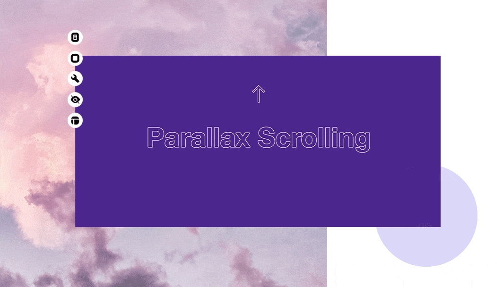

What is Parallax Scrolling, Explained with Examples
Back around its online debut in 2011, the parallax scrolling effect made waves as a new and exciting web design trend. Many internet fads have come and gone in the years since, but parallax scrolling has established itself as a fundamental design asset that’s here to stay.
What is parallax scrolling?
Parallax scrolling is a web design technique in which the website background moves at a slower pace than the foreground. This results in a 3D effect as visitors scroll down the site, adding a sense of depth and creating a more immersive browsing experience.
Parallax scrolling examples
Emilie De Grosbois, a Montreal-based visual artist and the founder of Mild Design, can show us a thing or two about how to make a portfolio. Her own portfolio website strikes visitors with an impressive welcome: a series of intricate fullscreen images displayed in a long scroll. These are some of the best website images we've seen.

02. Omura
Nolan Omura is a Hawaii-based photographer and videographer specializing in underwater photography. His ingenious take on the parallax scrolling effect adds depth and motion to his already captivating homepage design.